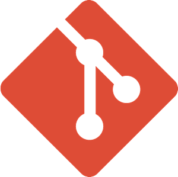

Experience in advanced Django concepts. Good at extending basic functionalities, and have good optimization and testing skills
Expertise in core python, a good understanding of multi-process architecture, and the ability to system integrations with good debugging skill.

Good version control experience using git. Trained with GitHub to manage repositories
Deep understanding of how REST APIs work. Familiar with Django Rest Framework core concepts and best practices.